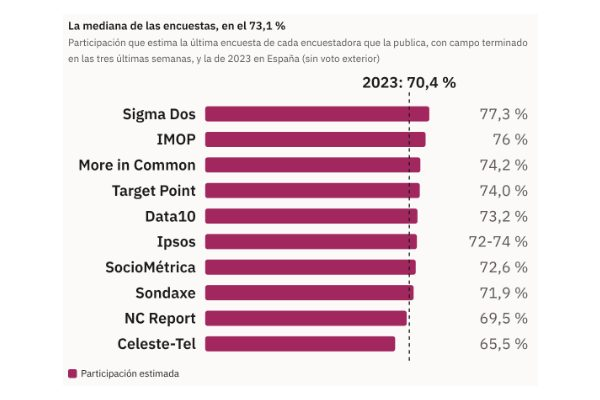
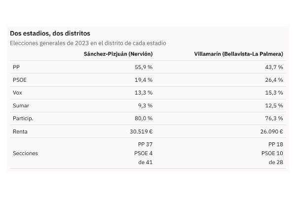

Actualidad · Encuestas de hoy · España
Encuestas elecciones generales 2026, hoy 19 de noviembre: Sondaxe deja al PSOE a 0,7 puntos del PP
Es su distancia más corta desde 2023. 40dB. la deja en 2,0 puntos y Sigma Dos, en 4,0; SW Demoscopia pone por delante al PSOE. La mediana de las encuestas, en 4,4 a favor del PP.
Por Nacho G. del Álamo · · Actualizado el
Cada párrafo lleva una etiqueta: dato (cifra comprobable con las fuentes), patrón (relación que se repite, sin afirmar la causa), hipótesis (explicación posible, sin dos fuentes independientes) o contexto (hechos y declaraciones publicados por otros, enlazados). Cómo verificamos
DatoSondaxe deja al PSOE a 0,7 puntos del PP, la distancia más corta que le ha dado desde las generales de 2023. Su tracking para La Voz de Galicia, con entrevistas del 13 al 17 de noviembre, da al PP el 28,5 % y al PSOE el 27,8 %; en la entrega anterior la distancia era de 2,0 puntos. Es una de las cinco encuestas de las elecciones generales publicadas desde ayer por la tarde. El tracking de 40dB. para El País y la SER de este jueves deja la distancia en 2,0 puntos (PP 32,4 %, PSOE 30,4 %); EM-Analytics para Electomanía, en 3,8, y Sigma Dos para El Mundo, en 4,0. SW Demoscopia para La Séptima sigue siendo la única que pone por delante al PSOE, con 2,8 puntos de ventaja.
SW Demoscopia · La Séptima · 18 nov
Cambio frente a su encuesta del 17 nov
Sondaxe · La Voz de Galicia · 18 nov
Cambio frente a su encuesta del 18 nov
40dB. · El País / Cadena SER · 19 nov
Cambio frente a su encuesta del 18 nov
EM-Analytics · Electomanía · 18 nov
Cambio frente a su encuesta del 17 nov
Sigma Dos · El Mundo · 18 nov
Cambio frente a su encuesta del 17 nov
DatoVox sube en 40dB. por primera vez desde que empezó su tracking: del 17,0 al 17,2 %, tras bajar en cada una de las cinco entregas anteriores. En Sondaxe sube 0,2 puntos, hasta el 19,6 %; en Sigma Dos baja 0,1, hasta el 19,7 %, y en EM-Analytics sube 0,1, hasta el 18,9 %. En SW Demoscopia baja 0,1, hasta el 16,4 %.
DatoEn escaños, contando los de UPN-PP con el PP en todas, PP y Vox suman 192 en 40dB. (133 del PP, 2 de UPN-PP y 57 de Vox, según su informe), 190 en Sondaxe, 188 en EM-Analytics y entre 185 y 196 en Sigma Dos, sumando sus horquillas: por encima de la mayoría absoluta de 176 en las cuatro. SW Demoscopia les da 173 en su reparto central, por debajo de 176, y alcanzan la mayoría en el 43 % de sus simulaciones.
Frente a la mediana de las encuestas
DatoLa mediana de la última encuesta de cada una de las 18 encuestadoras de las tres últimas semanas, la que resume nuestra página de encuestas de las elecciones generales 2026, da al PP el 31,4 %, al PSOE el 27,0 % y a Vox el 18,9 %: 4,4 puntos entre PP y PSOE. Las cinco encuestas de hoy ven la carrera más ajustada; Sigma Dos, con 4,0 puntos a favor del PP, es la que más se acerca a esa mediana. La mediana es la de la última actualización automática de la página y todavía no incluye la 40dB. de esta mañana.
Ver la tabla
| PP | PSOE | Vox | |
|---|---|---|---|
| SW Demoscopia | 29,1 | 31,9 | 16,4 |
| Sondaxe | 28,5 | 27,8 | 19,6 |
| 40dB. | 32,4 | 30,4 | 17,2 |
| EM-Analytics | 30,8 | 27,0 | 18,9 |
| Sigma Dos | 30,7 | 26,7 | 19,7 |
| Mediana | 31,4 | 27,0 | 18,9 |
Lo que estas encuestas no dicen
ContextoCon 1.000 entrevistas, los 0,7 puntos entre PP y PSOE de Sondaxe quedan muy dentro del margen de error de esa distancia, de unos ±4,7 puntos: es un empate técnico, no un adelantamiento a punto de producirse. Además, las cinco son trackings o encuestas que acumulan entrevistas de varios días, y cada entrega comparte la mayoría con la anterior, así que los cambios de un día a otro son pequeños por construcción.
ContextoEsta pieza recoge las encuestas publicadas hasta las 8.30 de este jueves. La ley prohíbe publicar encuestas desde el martes 24 de noviembre, así que quedan cinco días de encuestas.
Preguntas frecuentes
¿Qué dicen las encuestas de las elecciones generales hoy, 19 de noviembre?
Sondaxe: PP 28,5 %, PSOE 27,8 %. 40dB.: PP 32,4 %, PSOE 30,4 %. EM-Analytics: PP 30,8 %, PSOE 27,0 %. Sigma Dos: PP 30,7 %, PSOE 26,7 %. SW Demoscopia: PSOE 31,9 %, PP 29,1 %.
¿Quién gana las elecciones generales según las encuestas?
El PP, en cuatro de las cinco publicadas desde ayer, con entre 0,7 y 4,0 puntos de ventaja. SW Demoscopia da ganador al PSOE. La mediana de las 18 encuestadoras da al PP 4,4 puntos de ventaja.
¿Hasta cuándo se pueden publicar encuestas?
Hasta el lunes 23 de noviembre. La ley electoral prohíbe publicarlas en los cinco días anteriores a la votación, desde el martes 24 hasta el cierre de los colegios el domingo 29.
Encuestas elecciones generales 2026 · Las encuestas de ayer, 18 de noviembre · Cuánto discrepan las encuestas
Método y fuentes
- Qué se compara
- Las encuestas de las elecciones generales publicadas desde las 15.00 del 18 de noviembre hasta las 8.30 del 19 (Sondaxe, 40dB., EM-Analytics, Sigma Dos y SW Demoscopia), cada una frente a su entrega anterior y frente a la mediana de la última encuesta de cada encuestadora de las tres últimas semanas, la de mapaelectoral.es/encuestas.
- Límites
- Son trackings o encuestas que acumulan entrevistas de varios días: cada entrega comparte la mayoría con la anterior. El margen de la distancia entre dos partidos supone muestreo aleatorio simple. Los escaños de UPN-PP se cuentan con el PP en todas las sumas de PP y Vox. La mediana es la de la última actualización automática y aún no incluye la 40dB. del 19.
- Cómo se calcula
- Ventaja: estimación del primero menos la del segundo, en puntos. Margen de la distancia entre dos partidos de una encuesta: dos errores típicos, raíz de (p1 + p2 − (p1 − p2)²)/n. Mediana: mapaelectoral.es/encuestas (encuestas/src/construir.py, medianas()). Script: actualidad/src/resumenes/encuestas_1911.py. Cifras reproducibles con los scripts del expediente de la pieza. Metodología de Actualidad · Metodología del Atlas
- Fuentes
- La Voz de Galicia, tracking de Sondaxe (18-11-2026)
- 40dB. para El País y la SER, tracking de campaña, día 7 (informe, 19-11-2026)
- Electográfica, 40dB. (19-11-2026)
- El Mundo, Sigma Dos (18-11-2026)
- Electomanía, EM-Analytics (18-11-2026)
- La Séptima, barómetro de SW Demoscopia n.º 14 (18-11-2026)
- Wikipedia, Opinion polling for the 2026 Spanish general election (CC BY-SA 4.0)
- Mapa Electoral, encuestas de las elecciones generales 2026
- Autoría
- Nacho G. del Álamo
- Revisión de datos y texto
- Nacho G. del Álamo, 19 de noviembre de 2026
- Publicado · actualizado
- 19 de noviembre de 2026 · 19 de noviembre de 2026, a las 08.30
- Correcciones
- Ninguna.
Serie «Camino al 29N»: 175 piezas
- Feijóo hace campaña con UPN en Pamplona, donde el PSOE ganó 77 de las 151 secciones en 2023; con UPN y PP sumados, se habría quedado en 49
- Al PP le faltaron 9.793 votos en 2023 para recuperar un diputado en Gipuzkoa; Feijóo arropa hoy a su candidato, atacado en Hernani
- En 2023, las últimas encuestas daban al PP 5,7 puntos de ventaja sobre el PSOE y ganó por 1,4: si hoy fallaran igual, el PSOE iría primero
- Si la abstención fuera un partido, en 2023 habría quedado por delante del ganador en más de la mitad de las grandes ciudades y en la mitad de las secciones de España
- Voto por correo para las elecciones generales del 29N: el plazo para pedirlo acaba el jueves 19; en 2023, una de cada tres solicitudes llegó en las dos últimas semanas
- Encuestas y debate: tras el cara a cara de 2023, 10 de 14 encuestadoras ampliaron la ventaja del PP; trece días después ganó por 1,4 puntos
- Elecciones generales: una de cada tres secciones cambió de ganador entre 2019 y 2023
- Elecciones generales: las encuestas dan al PSOE entre el 25,5 y el 33,3 %
- Elecciones generales: Vox baja al 17 % en la encuesta diaria de El País
- Encuestas elecciones generales 2026, hoy 18 de noviembre: el PSOE, a dos puntos o menos del PP
- Estás aquíEncuestas elecciones generales 2026, hoy 19 de noviembre: Sondaxe deja al PSOE a 0,7 puntos del PP
- Debate Sánchez Feijóo: hora, dónde verlo y quién gana el cara a cara
- Elecciones generales: el modelo de encuestas da escaño al Frente Amplio en 5 de sus 17 provincias
- Elecciones generales: en Gijón, Vox sacó en 2023 su mejor resultado en Somió, el barrio más rico: 17,0 %
- Encuestas elecciones generales 2026, hoy 20 de noviembre: el PP gana en las cinco, por entre 2,0 y 4,6 puntos
- Veda de encuestas: hasta cuándo se pueden publicar las del 29N
- Cómo votar en las elecciones generales del 29N: horario, qué llevar y cómo saber tu colegio
- A qué hora se sabrán los resultados de las elecciones generales del 29N
- Participación en las elecciones generales del 29N: las encuestas prevén un 73,1 %, 2,7 puntos más que en 2023
- Después de las elecciones generales del 29N: cuándo se constituyen las Cortes y los plazos de la investidura
- Ver las 175 piezas de la serie
Sigue leyendo
 Encuestas de hoyEncuestas elecciones generales 2026, hoy 23 de noviembre: PP y Vox suman mayoría absoluta en las siete
Encuestas de hoyEncuestas elecciones generales 2026, hoy 23 de noviembre: PP y Vox suman mayoría absoluta en las siete Camino al 29NDespués de las elecciones generales del 29N: cuándo se constituyen las Cortes y los plazos de la investidura
Camino al 29NDespués de las elecciones generales del 29N: cuándo se constituyen las Cortes y los plazos de la investidura
ParticipaciónParticipación en las elecciones generales del 29N: las encuestas prevén un 73,1 %, 2,7 puntos más que en 2023 Crónica de la semanaA una semana del 29N, la mediana de las encuestas da al PP 3,4 puntos de ventaja, 1,2 menos que hace siete días; el lunes 23 es el último día para publicarlas
Crónica de la semanaA una semana del 29N, la mediana de las encuestas da al PP 3,4 puntos de ventaja, 1,2 menos que hace siete días; el lunes 23 es el último día para publicarlas Getafe-AtléticoGetafe-Atlético: en la ciudad del Coliseum, el PSOE pasó de ganar en 112 de las 122 secciones a ganar en 74, y el PP se quedó a 2.182 votos
Getafe-AtléticoGetafe-Atlético: en la ciudad del Coliseum, el PSOE pasó de ganar en 112 de las 122 secciones a ganar en 74, y el PP se quedó a 2.182 votos
Sevilla-BetisEl derbi sevillano se juega en barrios del PP: en Nervión, el del Sánchez-Pizjuán, ganó en 37 de 41 secciones; en la ciudad, el PSOE fue primero en 286 de 521